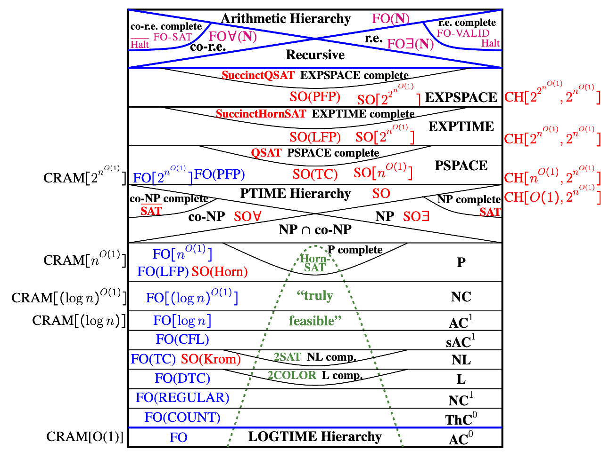

PhD Student at Theory Lab, School of Computing Science, Simon Fraser University.
Office: TASC1 9001
Phone: +1-672-389-6484
Institutional E-Mail: qrm1@sfu.ca
Personal E-Mail: quinnmayo@protonmail.com
PGP Public Key: N/A
My research area is computational complexity theory. I am currently interested in meta-complexity, the foundations of cryptography, and combinatorial (circuit) complexity. My advisors are Valentine Kabanets and Andrei Bulatov.
Once upon a time, I studied descriptive complexity as an undergraduate at UMass Amherst, where I am forever fortunate to have been supervised by David A. Mix Barrington and Eric Allender. Before the annals of history were kept, I was briefly a student at Florida SouthWestern State College where Professor Roger Webster was a source of great help and advice.
Besides mathematics, I enjoy driving the great highways and hearing old country tunes. I also like to think about the philosophy of language, ontology and computation, G. W. F. Hegel, and Ludwig Wittgenstein.

"There is no royal road to science, and only those who do not dread the fatiguing climb of its steep paths have a chance of gaining its luminous summits."—Karl Marx